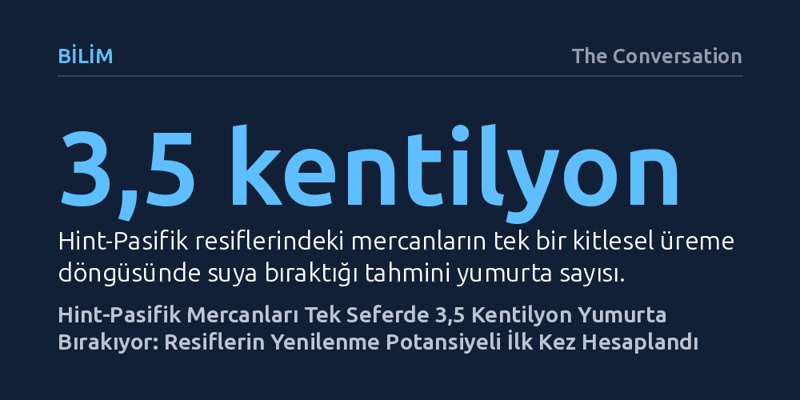

BILIM · The Conversation · 2026-10-14
Hint-Pasifik resiflerindeki mercanların yıllık tek bir üreme döneminde denize yaklaşık 3,5 kentilyon yumurta bıraktığı hesaplandı. Toplam yumurta üretiminin yarısını sadece üç mercan grubu karşılarken, türler arasındaki devasa verim farkları resif koruma stratejilerini doğrudan şekillendirebilir.
Mercanların yok oluşunu sadece kaybedilen alan üzerinden değil, resiflerin kendi kendini onarma kapasitesini sırtlayan az sayıdaki 'lokomotif' tür üzerinden düşünmemiz gerektiğini gösteriyor.

Çoğu mercan türü yılda yalnızca bir kez ürer. Ayın belirli evreleriyle kusursuz bir senkronizasyon yakalayan bu canlılar, birkaç gün süren büyüleyici bir doğa olayında sperm ve yumurtalarını topluca okyanusa salar. Yüz binlerce olimpik yüzme havuzunu ağzına kadar dolduracak minik pembe küreciklerin bir anda denize boşaldığını düşünün; akıntılar bu devasa biyolojik örtüyü birbirine karıştırarak yeni yaşamın temelini atar.
Ecology and Evolution dergisinde yayımlanan yeni bir çalışma, Hint-Pasifik bölgesinde gerçekleşen bu kitlesel üreme döneminde suya bırakılan yumurta miktarını ilk kez somut olarak hesapladı. Araştırmacıların ortaya koyduğu rakam akıl almaz bir ölçeğe işaret ediyor: Tek bir üreme döneminde bölge genelindeki resiflerden yaklaşık 3,5 kentilyon (yani 3.500.000.000.000.000.000) yumurta salınıyor.
Bu muazzam sayı sadece etkileyici bir doğa ansiklopedisi bilgisi değil. Yeryüzündeki ekolojik varlıkların miktarını bilmek, gezegenin işleyişini ve kendi kendini onarma gücünü anlamanın en temel anahtarıdır. Tıpkı topraktaki 20 katrilyon karıncanın ne kadar karbon tuttuğunu hesaplamak veya küresel balık yumurtası üretimini izlemek gibi, mercanların üreme kapasitesini bilmek de deniz ekosistemlerinin sağlığına dair en güvenilir göstergelerden birini sunuyor.
Peki bilim insanları okyanusta serbestçe yüzen kentilyonlarca yumurtayı nasıl saydı? Elbette 190 bin kilometrekarelik tropik resif alanına palet ve not defteriyle dalıp tek tek sayım yapmak imkânsızdı. Bunun yerine araştırmacılar mikro ölçekten makro coğrafyaya uzanan üç basamaklı bir modelleme kurguladı.
Süreç en küçük yapı taşından başladı. Bir mercan aslında 'polip' adı verilen binlerce minik canlının bir araya gelmesiyle oluşan bir kolonidir. Araştırmacılar önce ortalama bir polipin içine kaç yumurta sığdığını hesapladı. İkinci adımda, farklı mercan türlerinin ortalama boyutlardaki bir kolonisinde kaç polip bulunduğu belirlendi ve böylece tür bazında koloni başına yumurta kapasitesi çıkarıldı.
Son aşamada ise bu biyolojik veriler, yüzlerce mercan türünün gerçek dünyadaki resif örtüsü ve coğrafi dağılım haritalarıyla birleştirildi. Doğrudan yumurta sayımı yalnızca birkaç mercan türü için yapılmış olduğundan ve birçok türün yumurtlama zamanı dahi tam bilinmediğinden, eksik veriler akraba türlerin biyolojik örüntüleri üzerinden istatistiksel modellerle tamamlandı.
Araştırmanın ortaya koyduğu en çarpıcı sonuçlardan biri, mercanlar dünyasındaki keskin üretim eşitsizliği oldu. Yüzlerce mercan türü bulunmasına rağmen, toplam yumurta arzının yaklaşık yarısını yalnızca üç ana grup sırtlıyor: Dallı Acropora, büyük kaya benzeri bloklar oluşturan Porites ve Montipora mercanları.
Dahası, araştırma biyolojide 'ölçek uyuşmazlığı' denen ilginç bir dinamiği açığa çıkardı. Okyanus tabanında devasa kayaları andıran masif mercanlar, yaşayan dokularının santimetrekaresi başına en yüksek yumurtayı üreten şampiyonlar oldu. Ancak bölgesel toplam üretime bakıldığında, geniş resif yüzeylerini kaplayan dallı mercanlar baskın çıktı. Yani mikroskobik doku ya da koloni ölçeğindeki verimlilik, bölgesel toplam yumurta hacmine her zaman doğrudan yansımıyor.
Aynı eşitsizlik türlerin kendi aileleri içinde de geçerli. Ortalama yumurta üretimi düşük kabul edilen grupların içinde bile adeta birer yumurta fabrikası gibi çalışan istisnai türler mevcut. Hatta dallı Acropora grubu içinde tek bir türün, kendi akrabalarına kıyasla santimetrekare başına tam on kat daha fazla yumurta ürettiği görüldü. Bu durum, resif yenilenmesinin tüm mercanların ortak çabasıyla değil, belirli kilit türlerin sırtında yürüdüğünü kanıtlıyor.
Küresel ısınma okyanusları benzeri görülmemiş bir hızla tahrip ediyor; 1950'den bu yana dünyadaki mercan örtüsünün yaklaşık yarısı yok oldu. Şiddetli deniz sıcak hava dalgalarının ardından harabeye dönen bir resifin kendi kendine toparlanabilmesi için tek bir koşul var: Suya taze mercan yavrularının katılması. Yumurtlama potansiyelini bilmek, bu yüzden bir doğa merakından öte ekolojik bir ölüm kalım meselesi.
Bu çalışma araştırmacıların deyimiyle 'birinci derece bir tahmin', yani belirli belirsizlikler barındıran ancak resiflerin zirve kapasitede ne ürettiğini gösteren ilk somut temel çizgi. Elde edilen veriler, deniz koruma uzmanlarına net bir stratejik yol haritası sunuyor: Ekosistemi restore etmek için körü körüne tüm türlere eşit kaynak ayırmak yerine, yumurta üretiminin ve dolayısıyla yenilenmenin asıl yükünü taşıyan bu ağır siklet türleri korumaya öncelik verilmesi gerekiyor.